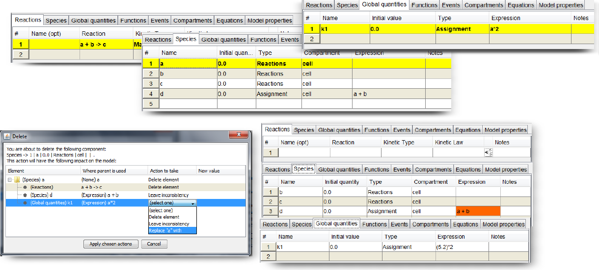

In this section:
Autosave
MSMB allows the user to activate the "autosave" option and to configure it according to his/her own preferences (i.e. the time between automatic auto-save events and the location of the generated files). The auto-saved le (stored in ".msmb" format) is generated in the location of choice and it can be accessed if the tool crashes for any reason, in order to recover as much non-saved work as possible. If the user closes the model/tool properly, this temporary le will be automatically deleted. Otherwise when the user runs MSMB again a message is prompted to the user, asking if s/he wants to load and
recover the last autosaved model.
Every time the user opens a new model, another le is generated and it represents a "beginning of the session" temporary file (again stored in ".msmb" format in the location of choice). This file will not be deleted when the user close the model/tool but it is going to be overwritten when the user starts a new session with the same model. This file is very useful to roll-back to previous versions of the model.
Since the model can be big and this can affect both the responsiveness of the tool (during the auto-saving process) and the space needed on the hard-drive, we allow the user to switch o this option.
Consistency checks
As mentioned before, MSMB has been designed to support the step-by-step development of a model of a biological system, providing to the user all the available information about inconsistencies and missing definitions, as soon as the tool is able to identify them. So, for example, if a user types a reaction and the species involved are not defined (supposing that the autocompletion option is inactive), a message will immediately appear in order to record this missing definition. This message, however, will not disturb the user in his/her writing process, and will be recorded in a specific tab that the user can open at any time during the modeling process. We decided not to prompt "aggressive" missing-elements messages at each step because this can be considered as a temporary error (because the user, obviously, can type just one cell at the time, so s/he can decide to complete the Reactions rst and then the Species list after: this is just a matter of modeling style).
Clearly, once the user asks the tool to export the current model to SBML or COPASI, the model should fulfill all the classical requirements of a valid model: so at this time, no Major issues can exist and, as a good practice, all the other messages should also be acknowledged by the user in order to assure that the issues identified by MSMB are actually acceptable in the exported model.
Our tool, however, allows the user to save inconsistent and incomplete models in an internal format, so that the modelling process can stop at any time and can be restored later.
The figure below shows an example of how the error messages are presented in our tool.
Example of the error messages generated by MSMB. The two Species are defined using elements (k1 and k2) that are not yet defined: in the lower section of the "Model properties" tab, all the Debug messages are collected. This section is divided into three subsections: on the left a tree collecting the different error messages into different categories/severity levels. On the right, in the upper part a list of all the messages falling into the category selected in the tree on the left. The element of the list show a short description of the problem, providing the user the location (table, row, column) of the error. Double click on this entry will redirect the user to the cell containing the mentioned error. In the lower, right part of the Debug Messages section the user can nd a more verbose description of the error that can help him/her taking the right action to fix the problem.
Preferences
As stated before, MSMB has been designed to give to the user as much control as possible in the customization of the tool behavior in different scenarios. All the customization can be accessed from the "Preferences..." option in the File menu. Example screen-shots of the Preferences window are shown in the figure below. All the choices from this section are saved in a configuration file that is loaded every time the user loads MSMB: in this way the modeler does not have to specify those values each time s/he is using the tool buts/he can instead adapt the tool to his/her own personal modeling style.
Different views of the Preferences frame. Here the user can turn on/off different autocompletion behavior and messages, set the default values for specific fields of the model, turn on/o the autosave and change the appearance of some elements of the interface (font size of the text in the tables and the color of the cells with problems/defaults values).
Import/Export
MSMB allows the automatic conversion of a multistate model into standard SBML/COPASI format, expanding all the multistate reactions/species into the corresponding single states one. The model can be exported to SBML or CPS (which is the COPASI format).
Our tool allows the input from those formats as well.
However if major issues have not been resolved, it means that the model is not COPASI/SBML compliant, so if the user wants to stop the editing and continue it later the only available choice is to save it into an internal format (that will generate a ".msmb" file in the le system) and this le can be reload later in MSMB for further editing.
The import/export capability of the tool has been tested using many existing models from the Biomodels database. Each original model contains peculiar features (e.g. names that were not following our syntax, complex mathematical expressions, etc.) which allowed us to test many features of our tool extensively.
However bugs or missing features can still be part of this prototype tool, so please contact the authors of this manuscript to report any bug or comments.
Custom behavior: Rename/Delete elements
Changing the name of a species is a crucial action that can have a big impact on the entire model. There are times when the user wants to rename a species once the model is almost complete and s/he wants to maintain all the reactions/events/expressions that were referring to that species still valid but with the new name. There are times, instead, when the user is not sure where this species has been used, and he/she wants to check all the places where this name has been used in order to actively control the renaming process. Our tool provides ways to accommodate all these different modeling styles.
In the
Preferences window, the user can chose one of the following three options:
- Automatic rename all connected elements. This means that once the user hits Enter after the renaming of a Species, the rename happens simultaneously in every expression/reaction where this species was used and no message is prompted to the user. This is the classical approach of all the existing modelling tools
- Custom renaming choice. This option requires the user to tell the tool where the renaming is to occur and where it is not needed. Once the user hits Enter after the renaming of a Species, a pop-up window will appear and a list of all the cells where the original species was used is prompted to the user. A check-box is shown next to each element in the list, so that the user can check the elements in which the renaming should be propagated and uncheck the ones that s/he wants to keep intact. Once the choice is complete, clicking the Rename button will actually apply the requested modifications in the model (Figure below)
- No automatic renaming. As the option says, this renaming affects only the Species name that the user is typing. It is the most cautious approach, since no other cells in any the other tables are changed. This also means that a series of Major/Minor issues can appear, and those messages, as previously mentioned, can help the user to understand where to act in the model to make it valid
Note that if the user picks, as a new name, one that already exists, the tool will ask if the desired final effect is a deletion of the old name and a of all the elements associated to this old name with the existing one or if it is just a mistake and the user want to go back type a new and fresh name (See Figure above).
A custom behavior has also been implemented in the tool for the case when the user wants to delete an element that is used in other parts of the model. What typically happens in other tools is that either the user is prevented to delete an element in use or the list of all the connected elements is deleted together with the initial entity. Both those choices are tied to the fact that deleting part of a model would make it inconsistent, and none of the existing tool deals with inconsistent models. Our strategy, on the other hand, is to support the user in controlling how this delete action affects the rest of the model and let him/her decide what to do in the cases where a temporary inconsistency is meaningful.

In the figure above a scenario in which the user is trying to delete an element is shown. The key ideas behind this pop-up window are the following:
- Each reference to the initial element that the user wants to delete can be treated separately.
- There are, however, dependencies between the action done on one element and the cascade effect that this action has on the model: this is the reason why a tree of actions is dynamically prompted to the user so that s/he can decide how far an action effect can be pushed.
- There are elements that is logical to delete together. For example, if a species is deleted, all the reactions that has that species as a reactant or product should be deleted too. However if the reaction is referring to that species in the function used for the kinetic law, it makes sense to keep the reaction in the system, but the user will have to provide a reference to something else as the parameter in the kinetic law.
- if the element is one for which the user can chose what to do, a drop down list is enabled and the available choices are:
- "Delete element": this option will delete the selected element and loads in the pop-up window all the action that this deletion would cause. The user is then forced to take some decisions about those new actions too before being able to close the window
- "Leave inconsistency": this option leaves the element exactly as it is. It will then contain a broken reference that will appear among the Major issues in the list of error messages of the model
- "Replace name with": this option allow the user to replace the reference to the parent deleted element to something else. The new value can be typed directly in the following column and it can be any number or mathematical expression referring to other elements of the model. Once all the actions are applied, the usual consistency checks are performed on this new expressions and if any problem is found the appropriate Major issue is added
Suffix qualifiers and autocompletion support
There are times, while building a complex model, when some autocompletion and contextual information support is critical to help the user to speed up the writing process (and to help him/her to make fewer mistakes). The autocompletion of related spreadsheets/cells is one of the examples (and we talk already about its importance in other chapters).
Another scenario in which it is useful to have some contextual information is when the modeler is typing a complex mathematical expression in the Expression or Initial quantity fields of a Species/Global Quantity. In those fields, the user can refer to other elements of the model and of specic quantities of those elements. For example, let's suppose that we have a species Species1, a global quantity k1 and a species Species2 whose initial value can be described as "the initial concentration of Species1 times the initial value of k1".
In our tool, we can simply type the following expression (Species1*k1) in the
Initial value cell of the Species2 definition row.
How does the tool know that the user is referring to the initial value of the two elements? and how does the tool know that the user wants to use the concentration value of Species1 and not the particle number? The answers rely on the default choices picked by the user in the Model properties tab (in particular the checkbox "Export Concentration (if no reference is specified)") and the information that the tool has from the place where the expression is typed (i.e. since the user is trying to define the initial value of Species2, the initial values of the other
elements is the only meaningful quantity that is possible to refer to. If the expression is typed in the Expression column, instead, the default choice is to refer to the transient value of the element).
All the choices made by the tool are, obviously, not universally correct, but they are the most likely value to which the user is referring while typing the expression. However the user can always explicitly refer to specific values of an element, adding, after the element name, the proper suffix qualifier.
A complete list of the available qualifiers is listed in the table below.
While typing, if the user does not remember the syntax of the existing suffixes or if s/he wants to see only the ones that are meaningful at that point of the expression, s/he can press the keyboard shortcut "CTRL-H": this will open a small drop-down menu
with the possible extension.
To extract the extensions that are meaningful at that point, the tool tries to parse the expression typed up to the cursor position and try to extract the last element: if that is a defined element of the model, the subset of possible suffixes qualifier is going to be shown. If the expression contains errors and/or the last element is not defined, an error message is going to be prompted to the user (saying that at that point there is no contextual help that can be provided).
| Species (Initial Concentration) |
.init.cnc |
| Species (Initial Particle Number) |
.init.prt |
| Species (Rates Concentration) |
.rate.cnc |
| Species (Rates Particle Number) |
.rate.p |
| Species (Transient Concentration) |
.trns.cnc |
| Species (Transient Particle Number) |
.trns.prt |
| Global Quantities (Transient Value) |
.trns |
| Global Quantities (Initial Value) |
.init |
| Global Quantities (Rate Value) |
.rate |
| Compartments (Transient Volume) |
.trns |
| Compartments (Initial Volume) |
.init |
| Compartments (Rates) |
.rate |
| Reactions (Fluxes Concentration) |
.flx.cnc |
| Reactions (Fluxes Particle Number) |
.flx.prt |
| Species (if conflicting name) |
.spc |
| Global quantity (if conflicting name) |
.glq |
| Compartment (if conflicting name) |
.cmp |
| Reaction (if conflicting name) |
.rct |
| Function call (if conflicting name) |
.fnc |
A final remark:
Since there can be situations in which a modeler wants to define, for example, a Species "a" and a Global Quantity "a", mathematical expressions using the simple "a" symbol are ambiguous (because the tool cannot know if the expression refers to the Species or to the Global Quantity). In this case, use of the proper suffix qualifier is mandatory to allow the tool to disambiguate between the two. Note that also in this case some qualifiers can be left unspecified (i.e. the timing qualifier transient in our example) so the tool will append it automatically at export time.
However when the choice of qualifier is ambiguous, it is the user's responsibility to provide the tool the correct information. If all names of the different elements of the model are unique, the tool will make this expansion completely transparent to the user; this is why we highly encourage modelers to use unique names throughout the entire model.